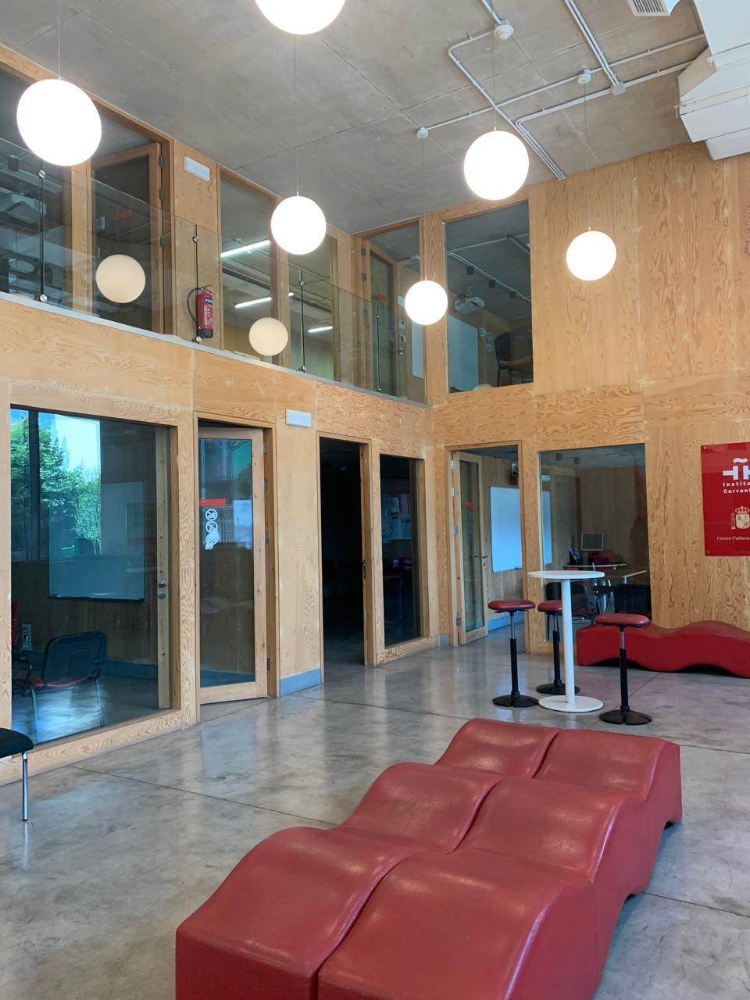
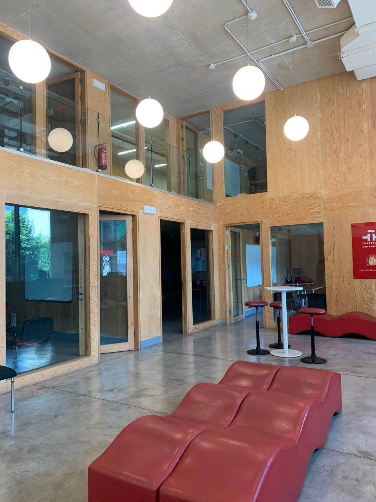

Instituto Cervantes
 

Instituto Cervantes promotes the Spanish language and Hispanic culture through courses, events, and educational programs created for learners of all levels. The institute welcomes students, professionals, and enthusiasts who want to experience the depth of Spanish culture and communication in a structured and supportive environment.
The organization provides a clear learning path that combines guided lessons with cultural context. Learners benefit from well prepared materials, knowledgeable instructors, and opportunities to practice the language in meaningful ways. Many individuals appreciate how the institute blends academic learning with exposure to literature, art, film, and contemporary cultural perspectives.
Its presence in different regions, including locations that serve communities in Lebanon, allows students to find information, cultural activities, and access points that match their goals. This broad network helps people discover programs and resources that support personal growth, career development, or academic advancement.
Anyone interested in discovering available courses, cultural events, or official resources can explore the main platform provided by the institute.